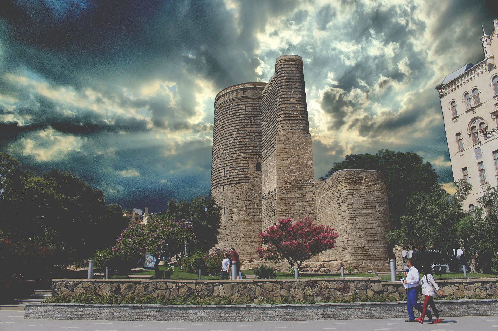

HistoryUNESCO
Icheri Sheher and the Maiden Tower, Baku
Baku’s walled Old City is a maze of narrow lanes, carpet shops, tea courtyards and mosques. Its icon is the mysterious Maiden Tower (Qız Qalası), a stone tower of around 30 metres whose origins are still debated. Nearby stands the Palace of the Shirvanshahs. The Walled City is a UNESCO World Heritage Site, so go early, wander slowly and climb the tower for views over the bay.